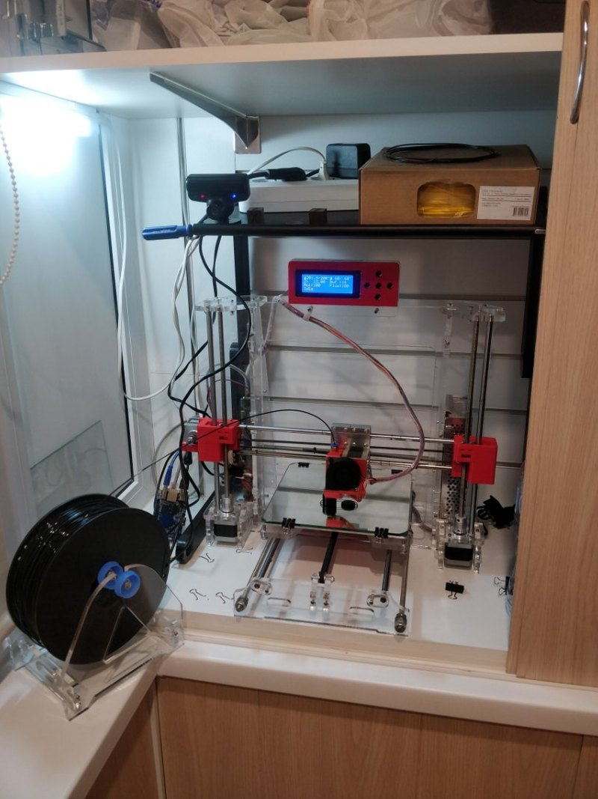
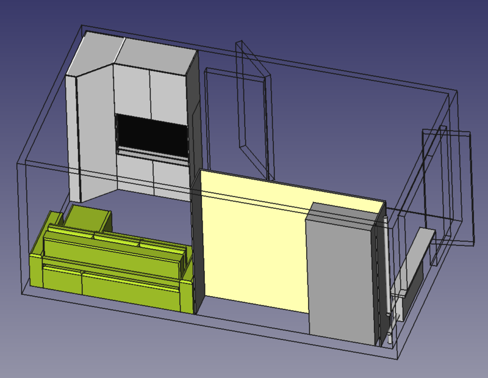
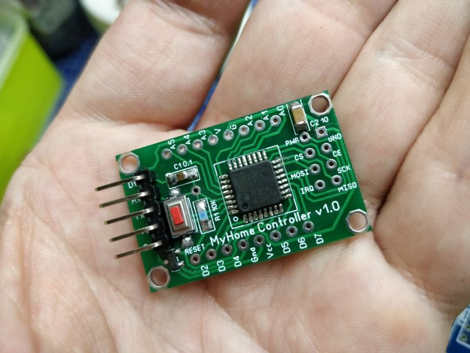

Про весеннее обострение

Этой весной столько всего приключилось и накопилось, что на ведение блога просто не хватало сил и времени. Постараюсь исправить это упущение и вывалю всё скопом. Скажу сразу, под обострением я в данном случае имею в виду обострение моего желания изменений, стремления к чему-то новому и избавление от чего-то старого.
Часть первая - продажа мотоцикла

Когда-то я решил завязать с мотоциклами и продать свой vtx1300c. Я выставил его на продажу за адекватную цену и начал ждать. Ждал я около двух лет. За это время каких только предложений мне не поступало, несмотря на то, что я уточнил в объявлении, что обмен меня не интересует. Мне неоднократно предлагали участки земли без коммуникаций и далеко от города, мне предлагали древнюю Ниву, которая продавалась за почти втрое меньшую цену и конечно же, без доплаты со стороны владельца Нивы. Состоялся довольно занятный диалог:
- Машина по вашей ссылке выставлена за X тысяч рублей, мой мотоцикл - за 3*X. Вы хотите доплатить 2*X тысяч?
- Парень, ты что, с ума сошёл? Да кому нахрен нужен твой мотоцикл, тем более за 3*X тысяч? А так у тебя будет машина, сможешь на ней на дачу ездить, возить что угодно.
- Что-ж, я очень рад, что у вас есть замечательная машина, на которой вы можете ездить на дачу и возить что угодно. Не хотелось бы вас лишать такого полезного транспортного средства. Всего доброго!
Honda GoldWing новая стоит в среднем два - два с половиной миллиона рублей и берут ведь. Потом были предложения обмена на битый Форд Фокус, а затем на BMW X6, с которой было "всё отлично и нет никаких проблем", но чуть позднее выяснилось, что документы на неё отсутствуют как класс. Одним словом, адекватных людей за два года было всего двое, да и те, похоже, нашли для себя другие варианты.
И вот, в начале марта я скинул цену на 50 тысяч и выставил мотоцикл на auto.ru. Спустя полчаса мне позвонил человек из Екатеринбурга и мы с ним договорились о встрече через неделю. Человек был адекватен, настроен вполне серьёзно, задавал правильные вопросы и вообще, сразу складывалось впечатление, что человек знает, чего хочет и разбирается в теме. Ещё минут через 20 после этого позвонил ещё один человек и снова из Екатеринбурга, я записал его в очередь. Далее был просто аншлаг. Каждый день звонило несколько человек из разных городов страны. Кто-то был готов приехать "уже завтра", кто-то заплатить больше, чтобы влезть без очереди... Ижевск, Саратов, Челябинск, Уренгой... Записал в очередь семь первых человек, остальных уже и добавлять перестал. Через неделю приехал хороший парень Михаил, завели с ним мот, всё проверили, погрузили на прицеп и мой VTX укатил в Екатеринбург. Жалко? Да. Мотоцикл просто обалденный. Но он создан для того, чтобы ездить, а не покрываться пылью.
Спустя неделю позвонил тому парню, спросил, как у него дела с мотоциклом. Парень ответил, что сменил сальники, пыльники, масла, фильтры, тормозную, заменил всё, что посчитал нужным... И как-то мне полегчало. Жена потом смеялась - "отдал котёночка в добрые руки". Но всё же сейчас мототоксикоз нет-нет, да и даст о себе знать, когда мимо по дороге проедет какой-нибудь круизёр. Что-ж, для меня это уже пройденный этап. Пойду по пути сублимации во что-то другое, захватывающее и интересное, благо этого в последнее время просто с избытком.
Часть вторая - новый ноутбук

После продажи мотоцикла позволил себе приобрести новый ноутбук. Я об этом тут уже писал, так что повторяться не буду. Скажу лишь только, что для меня приобретение ноутбука - это нечто значимое, от этого зависит мой комфорт на протяжении нескольких ближайших лет, потому что за ноутбуком я провожу очень много времени и это для меня главный инструмент, который я использую как для работы и саморазвития, так и для развлечения и отдыха. В конце-концов, от качества экрана зависит сохранность моего зрения. И так сложились обстоятельства, что я купил ноутбук дороже, чем планировал, вследствие чего выяснилось, что много лет подряд в отношении ноутбуков я себя явно недолюбливал и обделял.
Часть третья - смена работы
Это довольно забавная история. В одном чате знакомая скинула вакансию - компания, занимающаяся интеграцией решений, связанных с тематикой умного дома, искала python разработчика middle уровня. Я лично убеждён в том, что я и до junior не очень то дотягиваю, но мне было интересно пообщаться с людьми, работающими в подобной конторе, так как мне эта тематика интересна. Отписал, договорились о встрече и перед работой я пришёл на собеседование. Я не рассчитывал на то, что меня возьмут, ведь в отношении разработки я не соответствовал требуемому уровню, поэтому просто рассказал о своих изысканиях в этой сфере, задал кучу вопросов инженеру по аппаратной разработке, который на собеседовании присутствовал, а потом как-то не особо над этим задумываясь, откинулся на спинку стула и заложил руки за голову так же, как тот самый инженер. В этот момент тимлид достал смартфон и сфотографировал нас - мол, вы ребята как двое из ларца! А HR посмеялась и сказала, что тест пройден и "вы приняты". Мы посмеялись все вместе, после чего попрощались. А на следующий день мне позвонили и сказали, что хотят меня видеть в их команде.
Так как я ни на что не надеялся, то был приятно удивлён. И так звёзды сошлись удачно - что было множество аргументов "за":
- Новая работа связана с множеством моих интересов
- На ней используются многие технологии, с которыми я так или иначе сталкивался
- DevOps задач там тоже множество и можно с нуля настроить всё так, как мне кажется правильным
- Тимлид рассчитывает, что потом я плавно мигрирую из DevOps в разработку и буду прогрессировать уже там
- Есть доступ к умным железкам, в том числе те, что производит сама компания, будут выдавать домой
- Вокруг есть люди, у которых можно многому научиться в области электроники
- В случае, если нужно будет подтянуть свои знания, на носу майские праздники
- А в случае, если что-то пойдёт не так, есть финансовая подушка после продажи мото
Я попросил выслать приблизительный список задач, которыми мне придётся заниматься, изучил его и после этого согласился. В списке задач кроме всего прочего, фигурировала интеграция умных телевизоров LG через API. Дело в том, что у меня дома уже давно есть умный телевизор LG и я уже изучал его API и подключил его к своему умному дому. На работу ещё не устроился, а одну задачу уже сделал. Забавно.
Как оказалось, я при всём своём поверхностном знании python, смог дать несколько дельных советов, которые позволили сдвинуть дело с мёртвой точки в некоторых задачах. За первую неделю поднял Ansible, Jenkins, Zabbix и теперь настраиваю темплейты к последнему для мониторинга различных сервисов. Мне всё безумно нравится и меня прямо переполняет вдохновение.
За четверг написал микросервис на python, в пятницу добавил к нему конфиг, возможность асинхронных вызовов, поддержку https, завернул всё в контейнер и написал подробную документацию. Сегодня - уже изменил апи, кое-что оптимизировал, добавил поддержку мемкеша - кажется, у меня всё получается.
К слову об инструментах - выделили бюджет (3500), в рамках которого нужно было приобрести себе мышь и клавиатуру. Мышь взял беспроводную, от logitech, но самую простую, к мышам у меня особых требований нет. А вот клавиатуру пришлось поискать. Клавиатуры для меня - это одна из тех областей, к которым я проявляю особое внимание. Искал в рамках ограниченного бюджета механику, скелетон и на коричневых свичах - таких не оказалось не только у нас в Перми, но и под заказ из Москвы и Питера. Синие свичи всё-таки доставляют дискомфорт сослуживцам - громко щёлкают. На старой работе вроде все привыкли, на новой - не был уверен, что привыкли бы. Из тихих клавиатур нашёл только два варианта на красных свичах от Dexp, взял Dexp Saber. Пусть китайский ширпотреб, но уже лучше плёночной клавиатуры, которую можно взять за те же деньги. Фирменная подсветка из серии "красота по-китайски" - каждый ряд клавиатуры имеет свой цвет подсветки, но меня это волновало слабо, так как подсветку я включать и не собирался. Жаль только, что не было 88-ми клавишных аналогов, отсутствие NumPad, которым я практически никогда не пользуюсь, здорово экономит место на столе. К красным свичам за последнее время привык и мне даже понравилось. Хочу ещё поставить толстые демпферные кольца, если глубина зоны срабатывания позволит и компенсировать часть хода клавиши. Интересно, как это будет ощущаться с красными свичами.
Сегодня принёс начальнику одну из своих дешёвых механических клавиатур. Предложил ему попробовать. Через несколько часов тихого пощёлкивания начальник начал задавать вопросы про разные свичи, про ErgoDox и тому подобное, а в одном из открытых окон был открыт раздел с клавиатурами одного из интернет магазинов. Конечно, к хорошему быстро привыкаешь, но я был удивлён, насколько быстро это произошло в его случае.
А ещё я теперь работаю как белый человек с 9 до 18. Совсем недавно я считал необходимость просыпаться в 7 утра чем-то вроде проклятия и не понимал, как так вообще можно жить. Теперь понимаю, всё не так страшно, как мне казалось. Вот уже несколько дней подряд я возвращаюсь домой пешком через парк - это около 5 километров. Дышу свежим воздухом, слушаю птичек, смотрю на деревья, а вокруг весна, солнышко, на душе так хорошо. Всё такое привычное и в то же время такое новое - весна одним словом, а я будто выпал из какой-то спячки.
Часть четвёртая - 3d принтер

Это вообще целая эпопея. Года 4 тому назад (а то и больше), когда 3d принтеры только начинали набирать популярность, я раскошелился на аналог Prusa i3, который мне тогда обошёлся тысяч в 18 кажется. Сейчас чаще всего эти девайсы приходят в полусобранном и полунастроенном состоянии и с момента распаковки до момента первой печати может пройти минут 30. Раньше такого не было и нужно было приложить руки, голову и паяльник, чтобы собрать кучу компонентов, деталей и проводов хотя бы в подобие работающего механизма. Но это было ожидаемым. Проблемы крылись в другом.
Все компоненты были упакованы в пенопластовых ложементах. В процессе транспортировки один из шаговых двигателей (а это надо сказать, довольно увесистая штука) вышел из своего паза, раскрошил пенопластовые переборки и сломал самую большую часть акриловой рамы. Но моё счастье было бы неполным, если бы один из валов не пробил внешнюю оболочку посылки и не сбежал в неизвестном направлении. Мне пришлось сканировать части разбитой рамы, после чего проектировать свой вариант (спасибо умению работать с векторной графикой), к которому я добавил несколько технических отверстий, убрал вырезанные в плоскости рамы буквы, не добавляющие прочности и т.п.. После этого я долго искал контору, в которой приняли бы заказ и его исполнение стоило бы адекватных денег. В итоге лазерная резка акрила обошлась примерно в три с половиной тысячи рублей. Подходящий вал я нашёл, разобрав какой-то нерабочий принтер от Hewlett Packard, но нехватало ещё пары деталей. Возможно они покинули посылку следом за потерянным валом, а может быть их недоложили в Китае - теперь уже не узнать. В посылке нехватало крепления для ремня оси X и держателя концевика оси Z. Вместо первого я наколхозил пару винтов с шайбами, второй - вылепил руками из поликапролактона.
Но сборка принтера оказалась только началом моих мучений. У меня была проблема, заключавшаяся в том, что деталь постоянно срывало со стола. Когда смотришь, как на видео под соплом 3D принтера буквально из ничего в ускоренном воспроизведении появляется нечто, кажется, что это очень просто - загрузил модель, нажал на кнопку и вот, у тебя появилось вещественное воплощение набора нулей и единиц, в твёрдой пластиковой форме. На самом же деле 3D печать - это уравнение со множеством переменных, а комбинаторика и святое правило радиолюбителя "не крути две ручки сразу" делает из этого множества переменных неисчислимое множество попыток "сделать хорошо".
Главной проблемой было то, что модель срывало со стола. Чего я только не делал - менял температуру стола и температуру сопла на первом и последующих слоях, скорость подачи материала, скорость движения печатающей головки на внешних слоях и на внутренних, включал и отключал поддержку, менял тип заполнения детали, процент заполнения, интенсивность обдува, покрывал стол стеклом, пластиком, оргстеклом (матированным наждачками разной зернистости), малярным скотчем, каптоновым скотчем, пвх лентой, наносил три разных лака для волос, два клеящих карандаша, разные пропорции смеси сахара с водой, три вида пива... В течение двух недель каждый день я тратил на попытки часа по три в день, всё оказалось тщетным и тогда я отдал принтер "в рабство" своему другу, чтобы он тоже мог попробовать его настроить. Друг тоже какое-то время провёл за безуспешными попытками, после чего мы забыли об этом принтере года на 4 с лишним.
И вот, когда я уже уволился с одной работы и ещё не вышел на вторую в один прекрасный весенний день я унёс принтер в контору, которая в числе прочего занималась и 3D печатью. Там за неделю принтер довели до ума. Натянули все ремни как положено, смазали все оси и шпильки, отрегулировали мощность шаговиков (оказалось, что шаговики пропускали шаги по оси Z), положили новое ровное зеркало на стол и принтер стал печатать. Не без проблем, но стал печатать. Есть вобблинг по оси Z и вылечить его можно только сменой кареток, но есть шанс сделать ещё хуже. В общем, рано или поздно я или соберу себе новый принтер на кинематике H-Bot, используя детали старого или куплю себе новый, с которым проблем будет намного меньше. Пока склонаюсь с Creality Ender 3 - это, как мне кажется, лучший вариант за свои деньги.
Самое забавное, когда я принёс принтер домой, проблема со срывом детали снова стала воспроизводиться. На этот раз дело оказалось не в настройке принтера, а в настроке квартиры. СтОило закрыть окно на балконе, как проблема исчезала полностью и печать шла нормально. Даже лёгкий сквозняк может испортить всё дело.
Сам принтер поселился в шкафу, туда же было подведено питание и сеть, затем к принтеру был подключен Orange PI PC, на который поставлен OctoPrint. Теперь можно печатать через Wi-Fi хоть с неттопа хоть с ноутбука, при этом наблюдая через вебкамеру за процессом. Очень удобно, раньше о таком тоже мечтать не приходилось. Про octoprint тоже стоит как-нибудь написать отдельную статью с разбором плагинов. Собираюсь добавить через плагин пару кнопок для включения света и самого принтера через реле и GPIO Orange PI, пока руки не дошли.
Самый частый вопрос, который мне задают, когда узнают, что я увлёкся 3D печатью - а зачем тебе вообще 3D принтер? На этот вопрос у меня ответов много.
- Мне нужны десятки корпусов для разных датчиков умного дома, нехорошо, когда куча проводов вместе с платой обмотаны полиэтиленовой плёнкой.
- Ведро всяких деталей для механики на разные проекты - на филамент экструдер, на детали для следующего принтера, на станок, который будет печатные платы прямо на текстолите отрисовывать.
- Нужны корпуса на пять разных одноплатных компьютеров, которые сейчас у меня работают. При заказе с али стоимость около 250 рублей, при печати - около 50р.
- Нужна куча всяких креплений для инструментов и коробочек для радиодеталей. До недавнего времени коробки с инструментами висели на тех жёлтых штуках, которыми закручивают полиэтиленовые пакеты с хлебом.
- Хочется нормальные крючки для экономпанелей, которые у меня использованы на балконе, и на которые можно повесить картину, лампу и тому подобное. До появления 3D принтера приходилось делать подобные крючки из двух дюбелей, нагревая их строительным феном и периодически обжигаясь в процессе формования детальки нужной формы.
- У холодильника сломались упоры, которыми он касается стены. Отдельно в продаже нигде не нашёл.
- Держатель проводов для пайке и припоя висели на гнутых кусках провода - прямо раздражало.
- Хочется сделать привод для рулонных штор на балконе, чтобы подключить их к умному дому - тоже нужны детали и корпуса.
И это ещё далеко не полный перечень, новые идеи приходят постоянно. Как-нибудь потом я об этом расскажу подробнее.
UPD: Не выдержал и заказал себе в эту субботу Creality Ender 3. Когда он придёт, разберу старый Prusa i3 и используя его части буду собирать себе новый.
Часть пятая - продолжение ремонта

Ремонт в моей квартире продолжается уже больше пяти лет. И это вовсе не потому, что его можно только начать и невозможно закончить, как многие говорят. Моё жизненное кредо - "лучше день подождать, потом за пять минут долететь". Ремонт делается в соответствии с теми же принципами. Я принципиально не беру кредитов и не переношу то состояние, которое испытваю, когда я кому-то что-то должен, поэтому единственный для меня вариант - накопить на ремонт. Копить на ремонт всей квартиры я мог был наверное лет пять, жить всё это время в гадюшнике не хочется, поэтому такие большие задачи решаются кусочно-аналитическим методом. Сначала - замена стеклопакетов, маленькая комната, санузел, кухня, балкон... И вот, остался завершающий этап - коридор и большая комната. С одной стороны мне прямо не верится в то, что скоро ремонт будет закончен. С другой - меня ужасает осознание того, что придётся разобрать своё рабочее место, шкаф-стенку, диван и всё это разнести по другим комнатам. Всё опутано проводами, всё соединено друг с другом и всё взаимосвязано. Одним словом, мороки будет масса, хоть я и не делаю ремонт собственными руками.
На один только выбор дивана было потрачено море времени, а о том, как расположить мебель, мы с женой думали ещё года три тому назад и периодически возвращались к этому вопросу. Рисовали картинки, спорили, приводили доводы. В итоге очень помогли мои минимальные навыки работы во FreeCAD. Перерисовывал всё много раз, в итоге пришли с Олей к тому варианту, который можно видеть на скриншоте выше. Что радует, квартира станет намного умнее. Сразу при ремонте в каждый стакан будет заложена отдельная фаза и, вероятно, витая пара на всякий случай.
Часть шестая - мутация умного дома

После многочисленных экспериментов с ESP8266, я понял, что нужно что-то менять в самой концепции. Wi-Fi - не лучшее решение для передачи данных между датчиками. Да, ESP8266 прекрасны, тем не менее, периодически зависают, теряют связь и вообще, довольно капризны. При этом конечные устройства вовсе не должны быть такими уж умными. У них чётко ограниченный круг задач - получить данные с сенсоров или кнопок и отправить куда-то на "материнский корабль", либо принять данные и произвести какие-то простейшие действия. Например, включить или выключить реле. При этом конечное устройство должно быть простым и надёжным, как автомат калашникова. В противном случае возникают некоторые неудобства. Скажем, невозможность включить свет или наоборот, самопроизвольное включение освещения в 4 часа ночи.
Для реализации простого и надёжного конечного устройства в теории достаточно и каких-нибудь AtMega8 или STM8 или MSP430 и радиомодуля. Но радиомодули тоже капризны, а функционал порою хочется расширить. В итоге остановился на связке atmega328 + nrf24l01 и библиотеке MySensors. И, кажется, это наконец-то тот вариант, на котором я остановлюсь на долгое время. Пока заменил выключатель в коридоре и пишу код под другие узлы, но дело пока продвигается медленно, поскольку много других забот.
Зимой встретил единомышленника. Человек увлечён теми же примерно вещами, что и я - 3д печать, умный дом, радиоэлектроника и прочим, но опыта у него больше. Сначала читал его обзоры на mysku.ru и статьи на samopal.pro. Потом нашёл его в контакте, добавил, начали переписываться. Заходил к нему на работу, крайне приятно пообщались, можно сказать, взахлёб, не смотря на то, что он мне в отцы годится. Совершили взаимовыгодный обмен горсти блоков питания с моей стороны на горсть печатных плат и микроконтроллеров с его стороны. Заодно получил ещё немного опыта в распайке SMD, SOT32 и TQFP32 паяльником. Получается довольно аккуратно, даже если учесть, что вместо части компонентов 1206 в наличии оказались только 0805 (то есть, 0.8мм * 0.5мм). Всё хочу развести свои платы, переделать всё по-своему, но всё никак не доходят руки до них. Мне порою кажется, что если бы в сутках было 80 часов, мне бы всё равно их не хватало на всё, что мне хочется и всё, что мне интересно.
Пожалуй, ничего более значимого в моей жизни пока не произошло.
Теги: жизненное, 3d-printing, moto, keyboards, smarthome